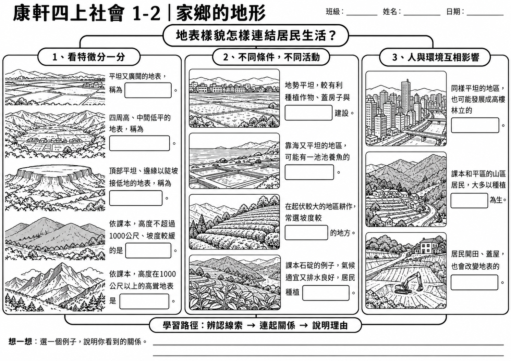

① 開啟 ChatGPT，附上教材 PDF
在 ChatGPT 對話框旁按「＋」或附件按鈕，選擇這一課的課本 PDF；有教師手冊或版型參考圖，也可以一起附上。
開啟 ChatGPT ↗PDF × CHATGPT
把教材 PDF 附到 ChatGPT，貼上指令，
做出黑白圖文、
情境填空與觀念串聯的學習單。
國語・自然・社會等科目適用 ／ 低・中・高年級分級
YOUR TEACHING DESK
在 ChatGPT 對話框旁按「＋」或附件按鈕，選擇這一課的課本 PDF；有教師手冊或版型參考圖，也可以一起附上。
開啟 ChatGPT ↗附好教材後，貼上指令並送出。先回答 ChatGPT 詢問的「活動／課次、年級、科目」，再開始製作學生學習單。
可自行輸入，例如 16、20 或 24 格。中年級社會與自然可參考 16～20 格。格數較多時可拆頁。
貼到 ChatGPT 後產生作品，完成後再回來核對實圖。
先檢查學生圖；在同一個對話附上學生原圖，再貼這段指令，製作同圖教師答案版。
教材直接附到 ChatGPT，不必上傳到本網站。AI作品使用前仍需核對教材。
逐項檢查後再勾選。這是人工紀錄，複製指令或資料通過不會自動勾選。
已確認 0／8 項
高年級採C挑戰版，保留自主心智圖與理由作答空間。查看設計說明 ↗
預設依教材重點與書寫空間彈性安排。需要固定題量時，選「指定確切格數」；例：每部分6格＝共18格。
可選擇不逐關等待；AI檢核不等於教師通過，未經教師確認仍標待教師審核。
保留核心問題、分段重點與各部分的關係。課本是內容依據，教師手冊用來確認。教材沒有提供的資訊，不猜、不補。
在 NotebookLM 完成
讓 NotebookLM 確認讀到哪一課。
找出這一課的核心問題與重點。
把同一課的重點整理成有關係的三部分。
在 ChatGPT 完成
僅低年級預設加注音，指定「注音芫荽 Bpmf Iansui」。中年級實測曾出現注音錯置及數字變動，生成後須逐字核對。圖片生成不能保證精確套用字型。需要精確字型時，使用字型檔排版。官方字型下載 ↗
可檢查三區題數、重複題目、答案與來源欄位，以及明顯的答案外露標記。
STUDENT × TEACHER
切換查看：學生版保留填空，教師答案版在原空格填入答案。以下均為本專案已製作的作品，待教師審核。

點圖片放大；切換上方版本，比較空格與答案。
CONTEXTUAL VISUAL WORKSHEETS
核心問題統整全頁，各區依教材呈現觀察、比較、步驟或因果，最後串聯概念。四年級以填空為主，搭配少量推論與短句理由；高年級同樣依本次指定的三部分與格數製作；下方C挑戰版僅為歷史案例。
以上為老師提供的視覺參考，未在本次重新逐題核對原教材；不標示為已驗證教材。實際內容依各課來源重做，避免直接沿用圖中的題目與答案。
TESTED WITH REAL MATERIALS
這是先前以看圖分類、理由與關係鏈為主的實測圖，保留供比較。新版預設已改為上方的黑白情境填空版型，載入底稿後會使用新的圖文規則；新版底稿尚待重新出圖驗收。
NotebookLM 曾混淆教冊與課本頁碼，已回到原檔更正。進階學生圖已檢視五種地形與三區題面；生成的圖片順序與指令不同，教師參考已依實圖調整，不能照預設順序批改。
此為四年級無注音案例；中年級注音與六年級挑戰版另有實測紀錄。低年級注音與實際紙本列印仍待驗收。
閱讀本次實測紀錄 ↗GRADE 6 · CHALLENGE WORKSHEET
參考老師既有的C挑戰版，先讓NotebookLM核對教材，再到ChatGPT實際出圖。難度放在自主組織、課文證據與情境推理。
不預畫主幹與分支；情境標明教學假設，學生可提出不同但有教材依據的說法。完整架構與評分規準另外下載。
此為先前不同任務的挑戰版，不代表目前高年級預設流程；待教師審核，未完成真實紙本列印或學生試作。詳見本次實測紀錄。
閱讀六上1-3實測結果 ↗MIDDLE GRADES · BOPOMOFO TEST
兩輪測試均未通過，錯誤圖片保留於實測紀錄，不作學生版展示。
使用同一份8格教材加上注音，實測出現符號不完整與對位錯置，高度的1000公尺也被改成100公尺。
第二輪改為直式、加大排版，1000公尺已修正；注音仍錯亂、未通過。兩輪測試圖與結果均保留，原本已核對的無注音版繼續提供。
僅低年級預設加注音。中年級預設不加，也可在第二步明確指定。每次出圖都要核對字音、聲調、數字與手寫空間。
閱讀注音實測與修正結果 ↗AI 幫你畫出來，
教材依據與學習目的，由你掌握。